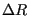
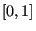

Next: Case Study 2: MC Up: Elements of a Continuous-Space Previous: Analytical Potentials
Particle Displacement. The most common trial move in continuous-space MC is a particle displacement. First, a small number , representing a maximum displacement, is set. A trial move consists of
| (90) |
This move guarantees detailed balance, provided that the random
particle selection is uniform; for any given move, selection of all
possible particles is equally likely. This means that probability of
suggesting a move that displaces a particle, going from a state  to
a new state
to
a new state  , has the same probability of selecting the same
particle while in state
, has the same probability of selecting the same
particle while in state  and giving it a displacement that will
return the configuration to state
and giving it a displacement that will
return the configuration to state  . (Do you think such sequential
moves ever actually happen?)
. (Do you think such sequential
moves ever actually happen?)
For a system of simple particles, random displacements are the only necessary trial moves; thus, is always unity. For more complicated systems, there are zoos of trial moves all over the literature. We will consider some more complicated systems and trial moves later in the course; one that we consider next is rigid rotation.
The question at this point is, how does one choose an appropriate value for ? If is too small, the system will not explore phase space given a reasonable amount of computational effort. If it is too large, displacements will rarely result in new configurations which will be accepted in a Metropolis MC scheme. So it takes a bit of trial and error to find a good value for , and the rule of thumb is to set such that the average probability of accepting a new configuration during a run is about 30%. This is termed “tuning to achieve a 30% acceptance ratio.” We will go through the exercise of determining such an appropriate value for for a simple continuous-space system; namely, 2D hard disks confined to a circle.
Rigid rotation. A second common type of trial move is used in systems of more structured molecules than just simple, single-center spheres. Consider a diatomic with a rigid bond length . Clearly, attempting to move one of the two members of the diatomic by a random displacement is likely to result in a new bond length with may be significantly different from . So, for a system of diatomics, a reasonable set of trial moves would include
With more than one kind of move, an attempt to generate a new state must be preceded by a random selection of the trial move. We can weight each kind of move and then use a random number to decide which move to attempt. For example, let's say that we choose that 80% of all trial moves be displacements, and the balance rotations (we will see later whether or not this is a good choice). Prior to an attempted move, we select a uniform random variate, , on the interval . If , which it will be 80% of the time, we execute a displacement of a randomly chosen molecule; otherwise, we execute a rotation of a randomly chosen molecule.
cfa22@drexel.edu